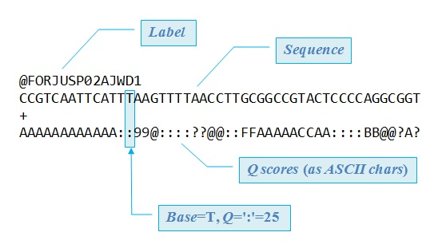

Unfortunately, the FASTQ format is not standardized. There are several variants in common use, and it is not possible to distinguish them automatically with high reliability. The fastq_chars command can be used to guess the format of an unknown file. See FASTQ format options .

FASTQ read with 50 base calls in Illumina format (ASCII_BASE=33).
There are always four lines per read. The first line starts with '@', followed by the label.
The third line starts with '+'. In some variants, the '+' line contains a second copy of the label.
The fourth line contains the Q scores represented as ASCII characters.